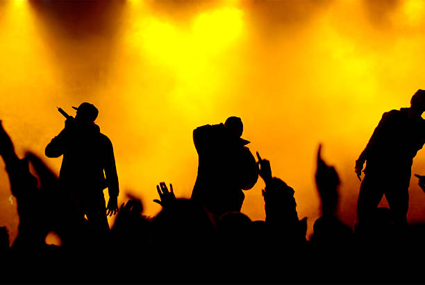
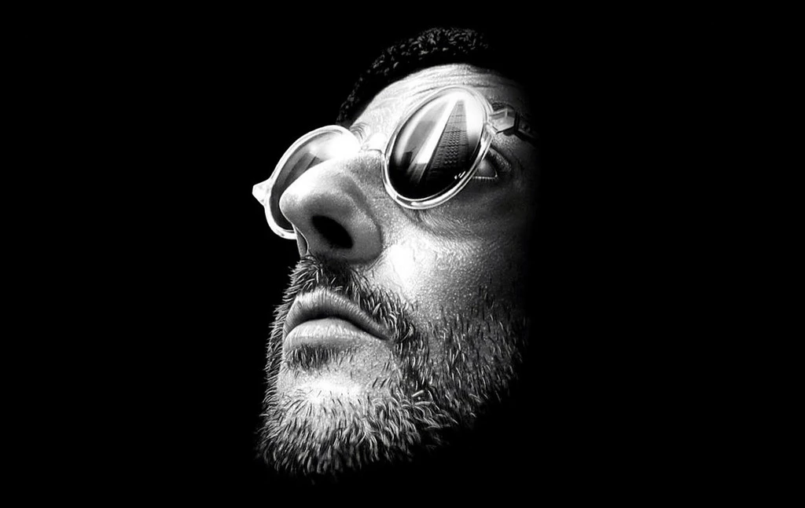
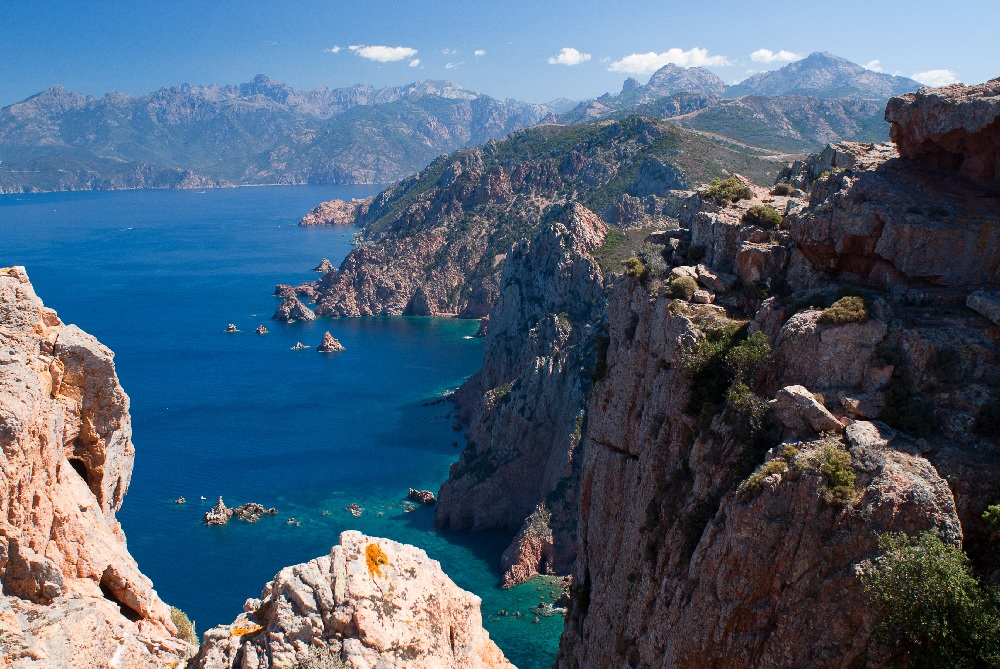

My Favorite rapers are :
- B20 (Booba) - He is from 92 Boulogne and in the game since 20yrs. His most reknown album is Ouest side (2006). It's inspiration is from Chicago.
- PNL - This duo (NOS and ADEMO) come from the 91 and are known for they melancolical albums with breathtaking clips.
- Nekfeu - He's the crush of many woman in France due to his charming style of rapping. He is also a part of the 1995 & S. Crew group. His best hit is Humanoïdes

The music during 80/90's in the USA
Thanks to Leon The Professionnal by Luc Besson (1994) with Jean Reno and Nathalie Portman, the music Shape of my Heart by Sting has known an incredible audience.
More over, the music In the air tonight from Phil Collins makes me feel like in Miami Vice and relax my mind.

The 4th art in Corsica 💥🍊
Having lived in Corsica with my family during severals years, I have been sharing Corsica culture in which music is very important. Lyrics describe the life of corisican and the fight against colonialism. Two of my favorite artists are L'arcusgi and I Muvrini. It's full of history.